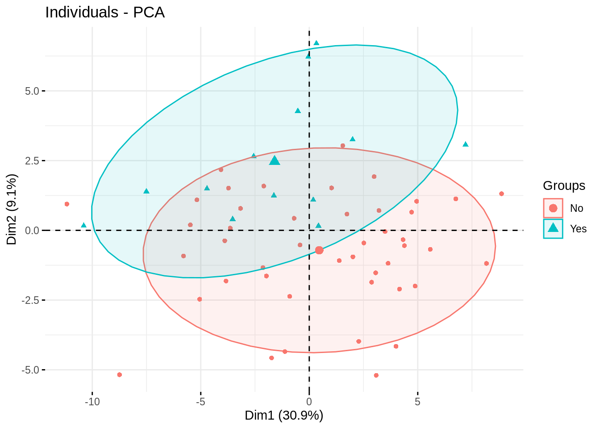
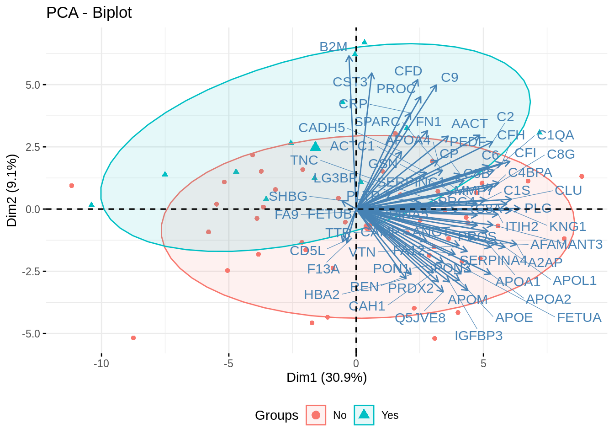

Chapter 4 Exploratory Data Analysis
//TODO insert video of EDA using Omics Central here
4.1 Principal Component Analysis
4.1.1 Method
4.1.1.1 What is PCA?
- method to turn a dataset with correlated variables into another dataset with linearly uncorrelated variables called principal components (PCs).
4.1.1.2 Why is PCA useful?
- The first few PCs capture most of the variability in the data.
- PCA can be used to visualize clustering patterns (samples or variables) in the data, determine relationships between samples (see Principal Component plot), between variables (see Correlation circle), between samples and variables (see Biplot).
- PCA is also useful in determining the influece of covariates, both techincal (e.g. batch effects) or biological (e.g. sex).
4.1.1.3 What is a principal component (PC)?
- a PC is a weighted average of the original predictors, PCi = Xvi, where X is a centered matrix and i=1,…,n.
4.1.1.4 What do the vector of weights vi do?
- vi maximizes the variance; XTX and are called eigenvectors, weights or loadings.
4.1.1.5 How do I compute the vector of weights, vi?
- apply a factorization method called singular value decomposition (SVD). SVD decomposes a matrix X into a product of 3 matrices, UDVT; Xnp = Unxp x D~pxp~ x VTpp or XTX = VD2VT.
- The columns of V are the weights/loadings for each principal component.
- D is a diagnoal matrix where entry Di,i is the standard deviation of the ith principal component (PC).
- Only the first k PCs are needed to capture the majority of the variation in the high dimensional dataset (n << p and k << p); Xnk = Unxk x Dpxk x VTnk such that Xnk \(\approx\) Xnp.
4.1.1.6 Why scale the data before applying PCA?
- The clinical variables are on different unit scales (e.g. Age (years) vs. Ejection fraction (%)). Scaling makes the mean of each variable zero and the standard deviation one.
References
1. page 64-66 from ESL: https://web.stanford.edu/~hastie/ElemStatLearn/printings/ESLII_print10.pdf
2. Wikipedia: https://en.wikipedia.org/wiki/Principal_component_analysis
4.1.2 Visualizations
4.1.2.1 Scree plot
- determine the proportion of variation explained by each principal component.

The barplot depicts the proportion of variation that is captured by the first five PCs; the first PC captures ~30.9% of the variability in the dataset consisting of 65 variables.
4.1.2.2 Component plot
- visualize the clustering of the samples and identify any clustering with respect to covariates of interest.

The scatter plot above is a 2D depiction of a 65 (# of clinical variables) dimensional dataset. PC1 and PC2 together capture 40% of the variability in the clinical dataset. Some separation between the groups of interest can be observed.
4.1.2.3 Correlation Circle
determine relationship between variables (based on the correlation between each variable and PCs).
- the angle (\(\theta\)) between two vectors determines the correlation between the two variables:
- \(\theta\)=0: postive correlation (corr=1)
- 0<\(\theta\)<90: postive correlation
- \(\theta\)=90: zero correlation
- 90<\(\theta\)<180: negative correlation
\(\theta\)=180: negative correlation (corr=-1)

4.1.2.4 Correlation Circle (with a cut-off)

The above plot only displays the variables if they have a correlation greater than 0.5 with either PC1 or PC2. Ischemia and Statins are positively correlated suggesting that patients with ischemia are likely to be on statins. BNP (Brain Natriuretic Peptide) is positively correlated with age and negatively correlated with Heart Rate.
References
1. Figure 1 from BioData Mining volume 5, Article number: 19 (2012)
2. plotVar(): mixOmics R-library 3. fviz_pca_var(): factoextra R-library
4.1.2.5 Biplot
- superimpose the principal components with loadings vectors.

Each arrow can be thought of as an axis. For example, BNP points to the left which means that patients on the left (PC1 < 0) have lower BNP levels than patients on the right (PC1 > 0). Patients at the center (PC=1) have an average BNP level. Note that this aligns well with the hospitalization status; ie. patients on the left are more likely to be hospitalized as compared to patients on the right.
References
1. ggbiplot(): https://github.com/vqv/ggbiplot
2. Biplot: https://stackoverflow.com/questions/6578355/plotting-pca-biplot-with-ggplot2
3. biplot(): K. R. Gabriel (1971). The biplot graphical display of matrices with application to principal component analysis. Biometrika, 58, 453–467. doi: 10.2307/2334381.
4. fviz_pca_biplot(): http://www.sthda.com/english/wiki/fviz-pca-quick-principal-component-analysis-data-visualization-r-software-and-data-mining
4.1.2.6 Are the major sources of variation in the proteomics dataset related to any demographics variables?
- this is often answers by correlating the PCs with demographics variables such as batch or disease of interest.
4.1.2.6.1 Test the Pearson correlation between PCs and demographic variables

4.1.2.6.2 Test the Spearman correlation between PCs and demographic variables
The associtation between PC1 and BNP has a p-value of < 0.01 which supports the Biplot in which BNP was parallel to PC1 (x-axis).
WARNING: This is only to be used for exploratory purposes and not for inference since spurious correlations may arise.